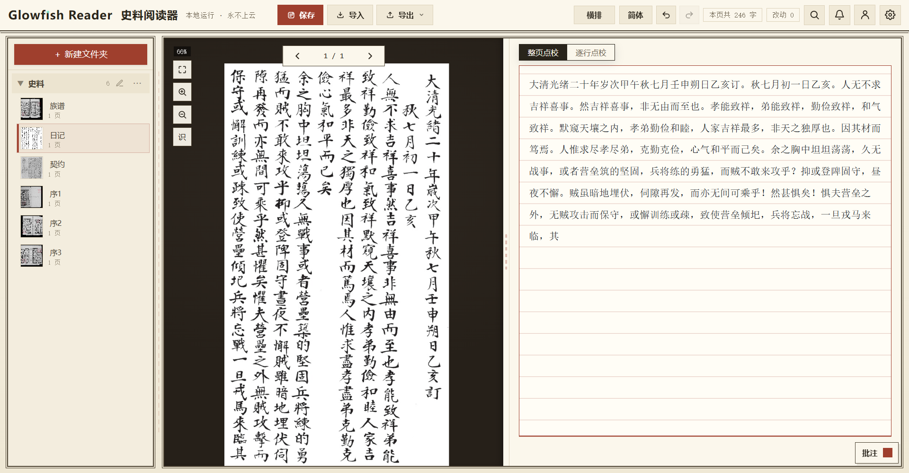
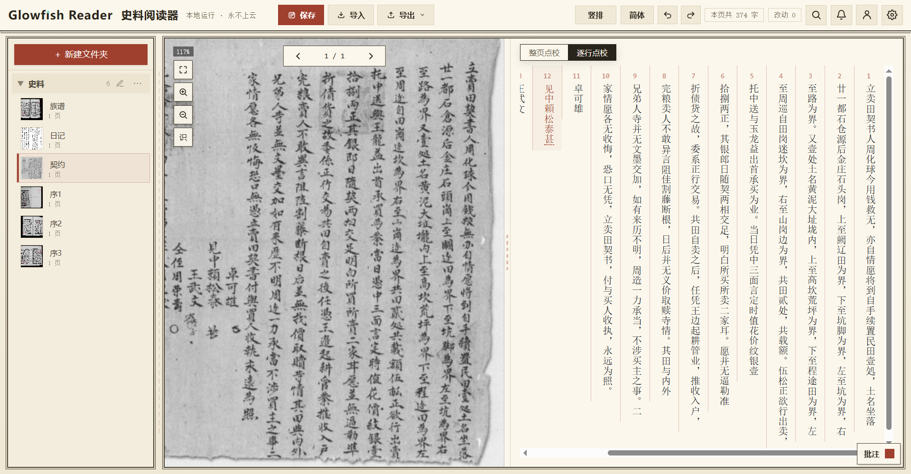
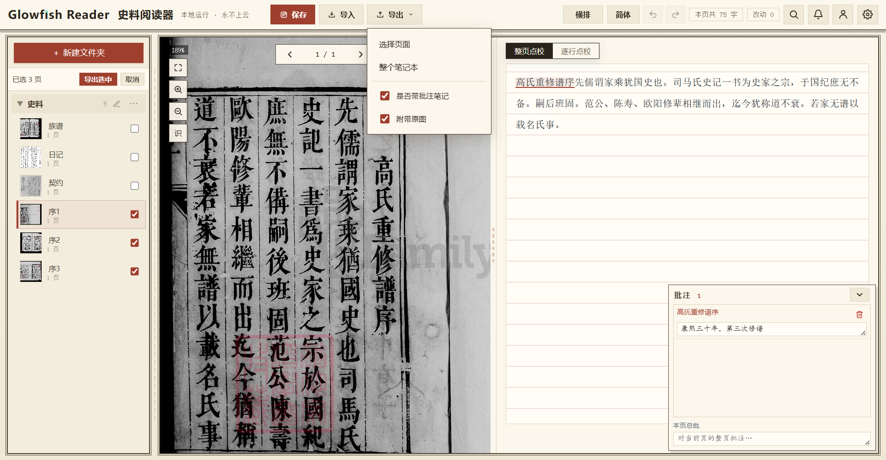
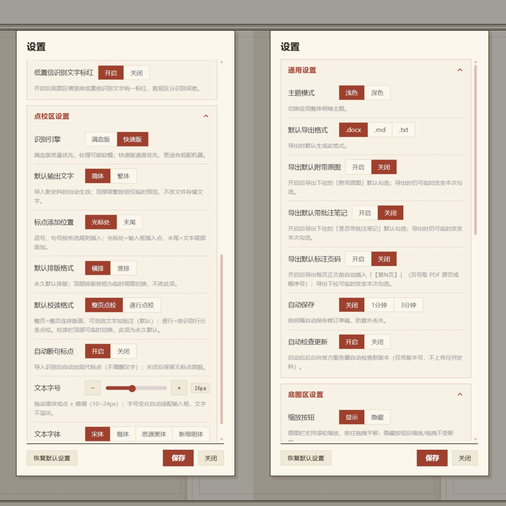
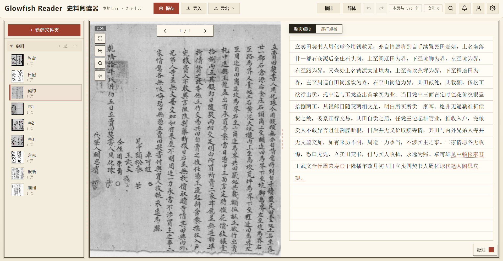
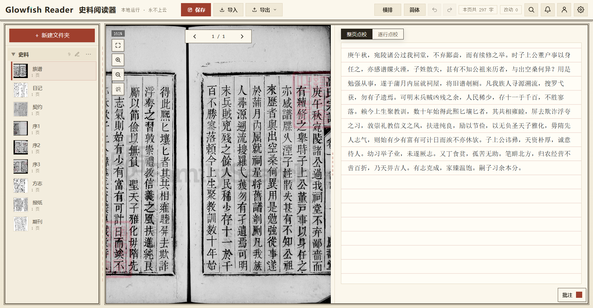
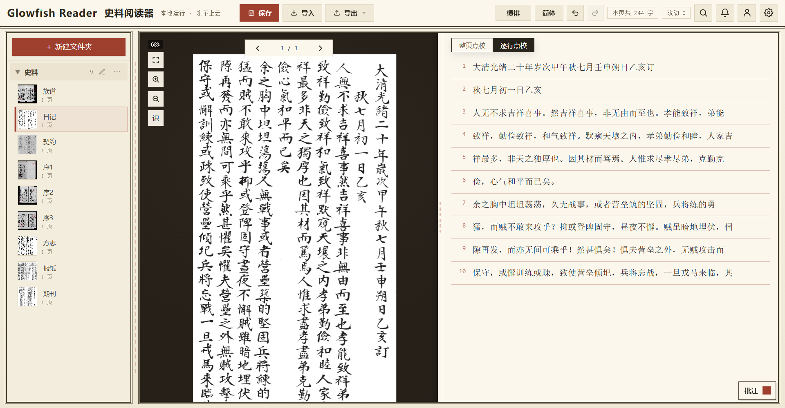
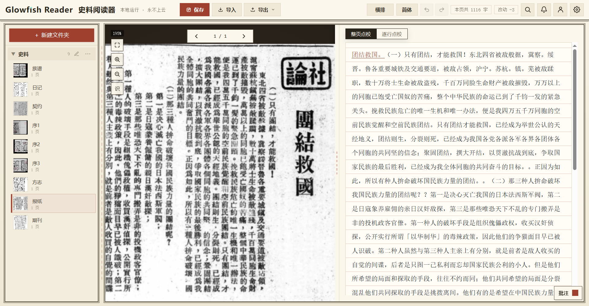
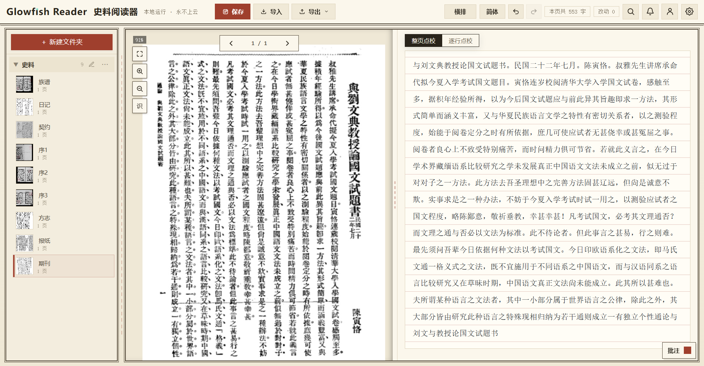
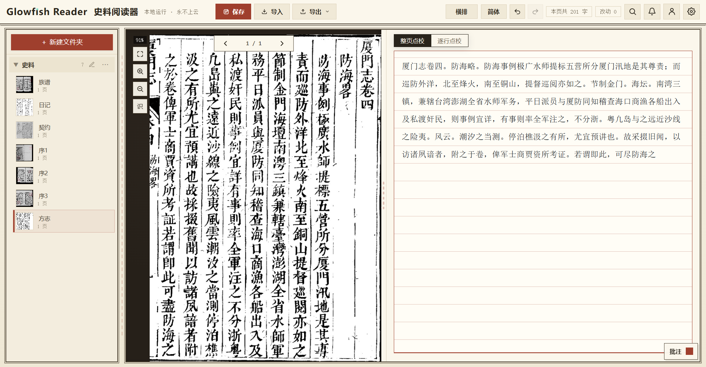

「纯本地化」OCR 史料阅读器
专为古籍点校、学术人群设计，横/竖排繁体史料高精度识别、校读、批注 纯本地化运行，数据永不上传，保护研究资料的私密性
最新版 V1.0.0 · 注册账号即免费试用
Project Intro
项目介绍



Recognition Scenes
识别场景






How To Use
操作视频
演示视频制作中
Privacy Promise
我们承诺：保护您的研究数据隐私
Follow Us
关注我们
扫码加入交流群！
您可以在这里交流使用感受
也可以在这里找到同行者
我们也会听取您的建议进行更新
关注“小青鱼”
开发者的个人账号
将持续发布
近代中国的一手照片、影像资料
分享AI赋能历史研究的一手信息
Download
把史料阅读器带回桌面
手机号注册即享 14 天免费试用，到期后续期即可继续使用。工作稿保存在本机，不会因为试用到期而丢失，也不会被上传到云端账户里。
下载 Windows 版
最新版 V1.0.0 · 注册账号即免费试用
运行环境
面向普通 Windows 台式机和笔记本电脑用户，适合在阅览室、办公室或断网环境中长时间点校。
- 支持 Windows 10/11，64 位系统
- CPU 即可运行，无需独立显卡
- 安装包内置识别、标点、简繁转换组件，无需安装 Python
安全提醒
Glowfish Reader 目前以独立工具形式发布，首次运行安装包时，Windows 可能会弹出安全提醒。请确认安装包来自官网或授权下载链接。
需要核验时，可用下载清单里的 SHA-256 与本地安装包比对；确认来源后点击“更多信息”，再选择“仍要运行”。
Q & A
常见问题
没找到答案？到「关注我们」加入微信交流群，我们会一一回复。
有没有 Mac 版？
暂时没有。目前仅提供 Windows 10 及以上的 64 位版本，macOS / Linux 版本暂未推出。
运行是否依赖网络？
不依赖。OCR 识别、标点、简繁转换、批注和导出都在本机完成，全程可断网使用。用户登录后即可离线使用，联网只用于版本更新。
史料是否有泄露风险？
没有。史料文件和识别、点校生成的文本只保存在你自己的电脑硬盘，默认不经过任何云端服务器解析，也不会上传到账户里。完全保障用户的数据主权。
试用期结束后怎么办？
用户注册后即可享受 14 天全功能免费试用，到期后可加入微信交流群申请延期服务。软件生成的文件默认保存在您的电脑本地，不会因到期而丢失。